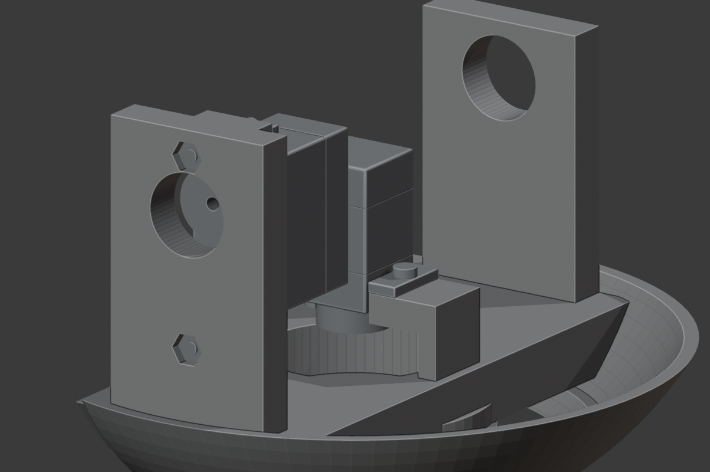
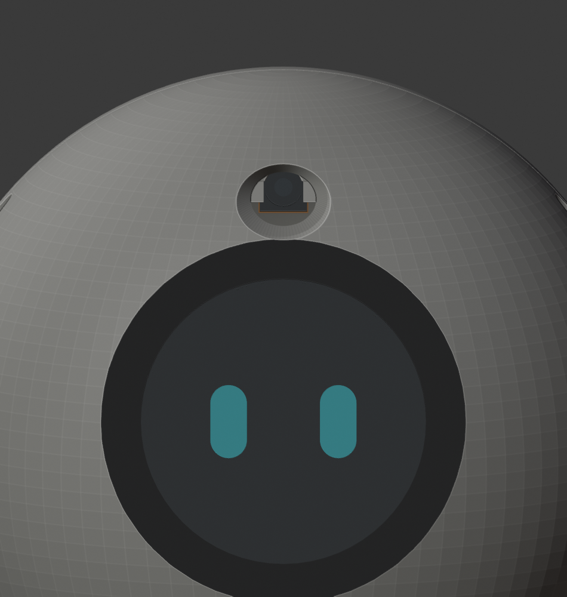
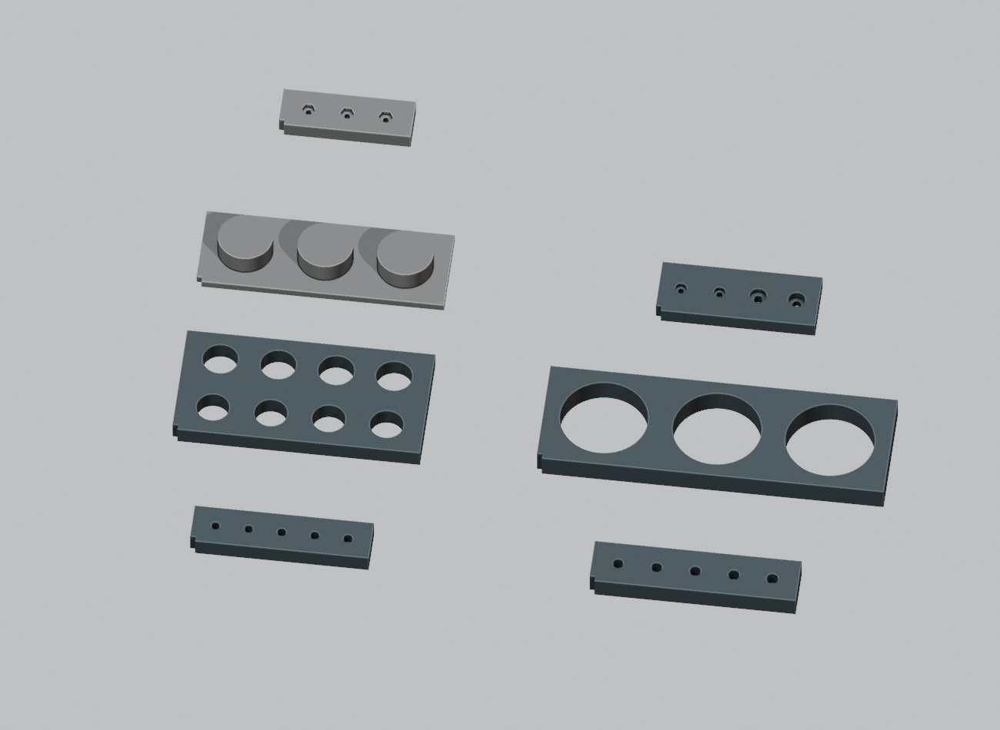

MORI / V1.2-M1.39 / PRE-ARRIVAL REVIEW
打样前，先把接口做完整。
嘉立创材料与试片建议、实际几何筛查，以及需要确认的局部方案。主模型已更新M1.39：穿栓螺母和椭圆扩口已应用，材料全PA12；IMU保留原两孔。
整机制造放行：BLOCKED。已完成的分析与试片设计不等于整机接口已完成。头部传动、部分嵌件座、真实排母/插头与电路断能接口仍需闭合。
7闭合配合试片
29对插壳体筛查
73螺钉工具路径
≈1.30 kgPA12假设整机质量
已采用的局部方案
已应用 M1.39舵机耳座：穿栓＋螺母
保持孔位与外轮廓，4处嵌件换4枚螺母；3处内沉槽，前柱用贯穿长螺钉。没有新增打印件。130姿态及螺母12mm入槽路径检查通过，强度待试打。

批准时的候选Blender · 检查结果
已应用 M1.39相机壳孔：连续椭圆扩口
镜头与捕获结构不动，删除旧孔叠加轮廓。775条名义视线无遮挡；不切黑色边圈。照片估算与实际镜头视角仍待校准。

批准时的候选Blender · 修改前 · 检查结果
IMU保留原两孔；第三固定点提案已撤回
在原20×16mm板后方增加5mm，元件及两个原孔实际位置不动。第三孔与Load_Frame一体短座配合，新增1枚螺钉和1个嵌件。空间检查通过；用户已撤回此提案，保留20×16mm及两个原孔；以上扩板数据仅作历史记录。
孔位与坐标嘉立创材料与试片
首轮建议PA12尼龙做结构验证，喷涂放到装配确认之后。当前大量M2连接不能假设嘉立创会代装嵌件；其公开服务仅列M3/M4/M5。材料偏好仍待答复。
7件试片 · 孔位图和测量表下载试片包完整材料与打印说明

对插与装配顺序
28个壳体保守包络无静态重叠；后板J3与WeAct存在0.0184mm³包络重叠，需细化。右列列的是完整装配状态下12mm直线路径的阻挡物，可通过先插接再合装解决部分阻挡。没有宣称线束、手指或锁扣已全部验证。
独立插头检查模型装配顺序与工具129件当前紧固件清单
没有被几何 PASS 覆盖的问题
头部传动未闭合
左俯仰短轴仅进入4mm宽轴承约2.1mm，到占位舵盘仍有2.2mm间隔。匹配20T/Ø3.95舵盘、连接与轴向保持需完成。新耳座候选不解决这个传动缺口。
旧嵌件占位不能直接采购
多数旧M2座不足以直接接纳所查FINE型号的外径和推荐包边。应确定实际连接方法并修改相应座，不能把通用占位标成最终尺寸。
线束与电路接口
原SW1删除、物理断能方式、充电/PD、保险座和耗能器件需电路交接；完整弯曲与服务环没有验证，未新增预估走线孔。
LCD原厂连接器网格
107/108两个连接器的原始CAD实体有效，但网格转换仍有缺陷；原厂形状未被删除或缩放，完整外接框在130个名义姿态中均未碰到其他零件（间隙搜索上限5mm）。这关闭了该包络的名义避让检查，未修复网格，也未验证插头与实物公差。
查看FINE候选嵌件包边不足的筛查位置
有限射线筛查；单位mm。负数表示候选外径可能超出已有材料。此表不是已选采购件的强度判定，也不表示允许自动改外轮廓。
计算、来源与交接文件
M1.38基线的PA12实心质量约748g，含现有硬件假设的整机约1.30kg，尚未完整计入线束、插头和涂装。俯仰10rad/s²名义需求约0.00875N·m；假设加重35%和额外0.01N·m摩擦时约0.0218N·m。它们是设计场景，不能当作实测或动态平衡/连续热能力验证。
质量与力矩明细WeAct堆叠筛查LCD连接器保守避让电路/采购交接工作状态来源与哈希
本页由 package_review.py 从实际检查报告生成。无采购订单、无文件上传、无硬件源码修改。所有打印件仍需实物校准与验证。